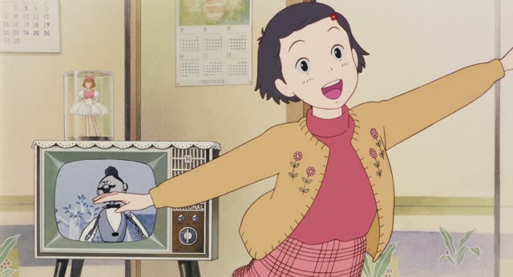
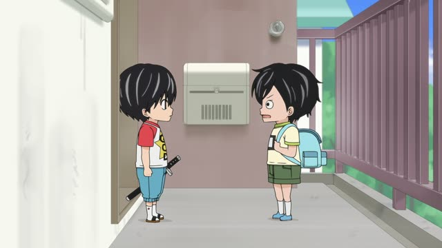

と (With)

Good Morning Call · Episode 11
私と付き合ってください！
"Please go out with me!"
と after a person means "with": the person you do the action together with. It goes right after them: 私 + と.
On this card, it answers "Go out with who?": with me. The verb 付き合う ("go out, date") comes right after.
Between two nouns と means "and" (ヨーロッパと南米). With a verb after it, it's "with". Same in polite and casual speech.

Only Yesterday
大人と一緒に出られる！
"I get to be in it with the grown-ups!"
と after a person means "with", often with 一緒に. On this card, a girl is picked for a play: 大人 + と + 一緒に = "together with grown-ups".
Quick Examples
Someone asks who you went to the concert with.
姉と行った。
"I went with my sister."
CasualSaturday plans.
友達と映画を見ます。
"I'm watching a movie with a friend."
PoliteAsking a coworker to lunch.
私と一緒に食べませんか？
"Want to eat with me?"
一緒に (together) after と makes the "with" extra clear. Very common.
PoliteWith and without
京都に行きました。
I went to Kyoto. Maybe alone, we don't know.
母と京都に行きました。
I went to Kyoto with my mom. Now we know who came along.
Examples from Media

The Wind Rises
僕と結婚してください
"Please marry me."
Literally "please marry with me": in Japanese you marry with someone, so 結婚する takes と.

Kekkon Dekinai Otoko · Episode 7
誰も あなたと結婚なんかしません
"Nobody's going to marry you."
あなた + と + 結婚する: marry (with) you. なんか adds "something like that", making it dismissive.
Quartet · Episode 1
音楽と一緒に暮らしたいです
"I want to live with music."
音楽 + と一緒に: "together with music".

Shirokuma Cafe · Season 1, Episode 4
あなたと行きたい海辺のドライブ
"The seaside drive I want to go on with you."
あなたと行きたい describes the drive: the one I want to go on with you.

Kotaro Lives Alone · Episode 7
僕 ホントは みんなと一緒に遊びたいんだ
"I actually want to play with everyone."
みんな + と + 一緒に ("together") + 遊びたい ("want to play").

Samurai Champloo · Episode 8
私と一緒に飲まない？
"Won't you have a drink with me?"
私 + と + 一緒に ("together") + 飲まない？ ("won't you drink?").

Shirokuma Cafe · Episode 17
パンダくんと一緒に撮った写真、初めてだよ！
"It's my first photo taken with Panda!"
と + 一緒に = together with.

Kotaro Lives Alone · Episode 4
僕と一緒に家出しよう！
"Run away from home with me!"
Further Reading
A Dictionary of Basic Japanese Grammar
Entry "to²" (with) · pp. 476–478
Tae Kim's Guide to Japanese Grammar
Noun-related Particles · The inclusive 「と」 particle